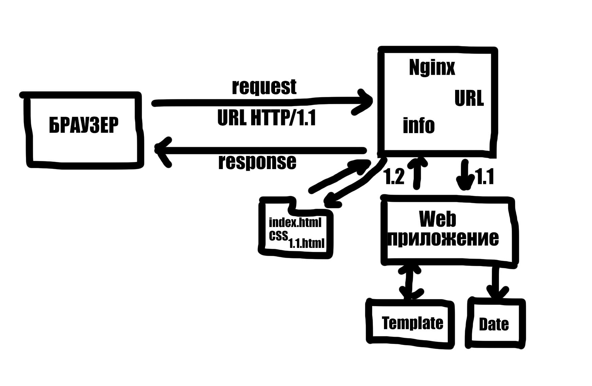

1.5 Динамические страницы и web приложения
Все веб-приложения делаются с помощью одних и тех же технологий: HTML, CSS и JavaScript. Однако есть много способов организации работы приложения. Выбор способа зависит от цели приложения и пользовательского опыта, которого мы хотим добиться. Хотя основных подхода всего два: Многостраничные приложения и Одностраничные приложения, каждый из них делится на подвиды.
Статические многостраничные приложения - состоят из набора статичных страниц. Их просто разрабатывать, но если страниц становится много (сотни и тысячи), или данные на странице меняются, то придётся генерировать их на лету. Для этого нужно подключать сервер и писать дополнительный код. На каждый переход нужно генерировать и загружать новую страницу, а это занимает время.
Одностраничные приложения (SPA) - дают возможность разрабатывать клиентские приложения со сложной логикой с помощью JavaScript. В этом подходе отрисовкой содержимого на странице управляет JavaScript. Переходы между экранами будут мгновенными, и пользователь сразу увидит результат своих действий. Однако такой подход создаёт новые проблемы: Как не загружать в браузер слишком много кода? Как обеспечить хорошую производительность? Где рендерить приложение: только на клиенте или на сервере?
Разработка таких приложений часто сложнее, так как может потребовать знания различных инструментов и фреймворков.
Многостраничные приложения – это набор статичных веб-страниц, которые связаны между собой с помощью ссылок. При клике на ссылки происходит переход между страницами, что ведёт к полному обновлению страницы в браузере. Это одно из наиболее значимых отличий от SPA.
Для начала выделим два основных вида многостраничных приложений:
• Набор готовых свёрстанных страниц, которые лежат на сервере и вместе с ними находятся и другие статичные файлы (CSS, JavaScript и картинки). Сервер отдаёт эти файлы по заранее настроенным путям.
• Динамическая генерация HTML на сервере. Чаще всего такое решение можно встретить на языках программирования PHP, Python и Ruby. При каждом запросе сервер запускает скрипт генерации HTML-страницы. Скрипт может взять данные из базы данных, произвести вычисления и собрать готовый HTML-код страницы.
Готовые веб-страницы
Подходят, если нужно собрать несколько связанных страниц, которые, по большей части, будут содержать статичную информацию, с которой пользователь может мало взаимодействовать.
Разработка при таком подходе обычно самая простая. Рядом складываются несколько html-файлов, в которых содержится вся необходимая вёрстка и дополнительные CSS/JavaScript файлы, подключённые к странице. В продвинутом варианте можно переиспользовать части кода с помощью шаблонизаторов и собрать сайт по кусочкам используя сборщики. В результате на сервер попадёт набор статичных файлов, которые будут раздаваться с помощью веб-сервера.
Преимущество такого подхода — это отличная производительность. Статичные страницы и файлы легко кэшировать с помощью браузера, CDN или Service Worker.
Динамическая генерация HTML
Динамическая генерация HTML страницы часто использовалась до изобретения Single Page подхода. Так до сих пор работает большинство форумов, интернет-магазинов, а также, большие приложения, как Facebook или ВКонтакте.
Особенность этого подхода в использовании серверных языков программирования (например, PHP или Ruby), чтобы генерировать итоговый HTML страницы, собирая его из разных частей и обогащая данными.
Например, пользователь перешёл на страничку со списком друзей:
1. Сервер получает запрос.
2. Идёт в базу данных, выбирает список друзей и вспомогательные данные.
3. По шаблону собирает HTML.
4. Отправляет HTML в виде ответа на запрос.
Пользователь сразу получает сгенерированную страницу со списком друзей. Если добавить новых друзей и зайти на страничку ещё раз, то результат будет другой, ведь список друзей изменился.
Использование сервера для генерации содержимого позволяет не нагружать клиентский код сложной логикой, а значит итоговый размер страницы будет меньше. При этом статичные части приложения и целые куски страниц можно так же легко кэшировать.
При всех плюсах многостраничных приложений, все они страдают от одного главного недостатка: при переходе между страницами браузер полностью обновляет содержимое, из-за чего нельзя создать полноценный опыт взаимодействия «как в приложении»: незакэшированным страницам нужно время для загрузки, а значит не будет мгновенного перехода; будет сбиваться положение полосы прокрутки и т.д.
В стремлении решить эти проблемы и создать полноценный опыт приложений веб-разработчики изобрели одностраничные приложения.
Single page applications (SPA)
Одностраничные приложения (сокращённо SPA) состоят из одной страницы, а всю остальную работу (создание содержимого, переход между экранами и получение данных) выполняет JavaScript. Такой подход позволяет создать полноценный опыт приложения: переходы между экранами происходят мгновенно, можно давать пользователю визуальный ответ, пока данные загружаются асинхронно с помощью API.
